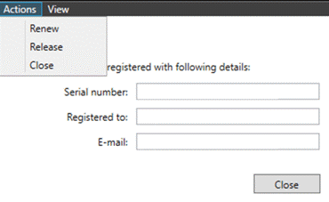

Lizenz ändern
Wenn eine Lizenz aktualisiert oder erweitert werden muss, kann dies durch Befolgen der folgenden Schritte durchgeführt werden:
Schließen Sie die Software und Dienste auf dem Server (Pserver und Pmonitor).
Starten Sie eine DOS-Eingabeaufforderung im Admin-Modus.
Navigieren Sie zu C:\Program Files\Metamation\Praxis\Bin, indem Sie
cd\ eingeben und Enter drücken.
Geben Sie PSERVER ein und drücken Sie Enter

Geben Sie LIC ein und drücken Sie Enter, und Sie werden den folgenden Dialog sehen.

Wenn Sie auf Aktionen klicken, haben Sie folgende Optionen:
-
Renew, um zu versuchen, die Lizenz zu erneuern.
-
Release, um die Registrierung der Lizenz aufzuheben und sie für die Registrierung auf einem neuen Computer verfügbar zu machen.
-
_Schließen , um das aktuelle Dialogfeld zu schließen.
Wenn Sie auf _Ansicht klicken, können Sie Details auswählen, und die Informationen über Ihre aktuelle Lizenz werden angezeigt.
| Damit eine erneuerte Lizenzänderung wirksam wird, müssen Sie die Pserver-Anwendungen/-Dienste nach der Erneuerung neu starten. |